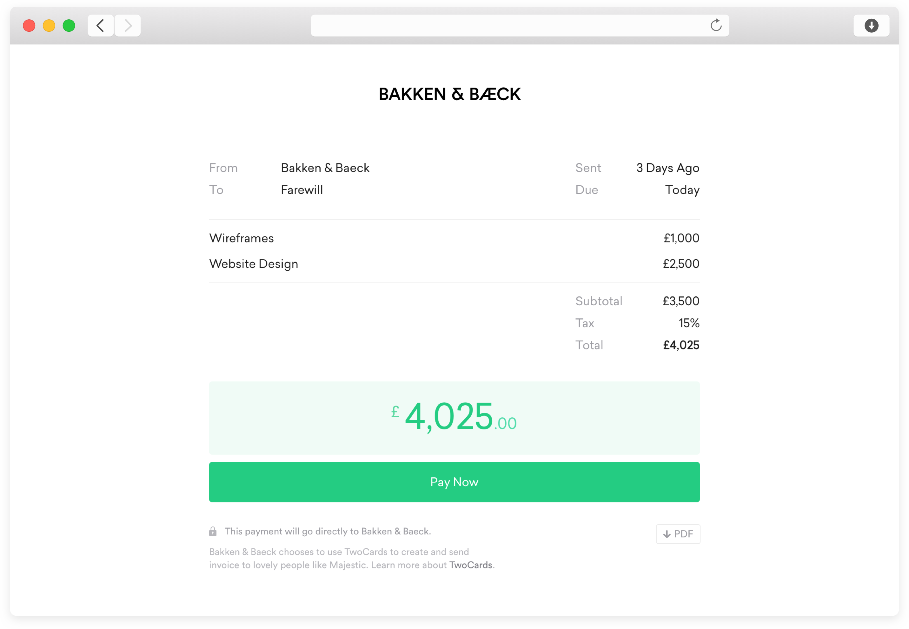
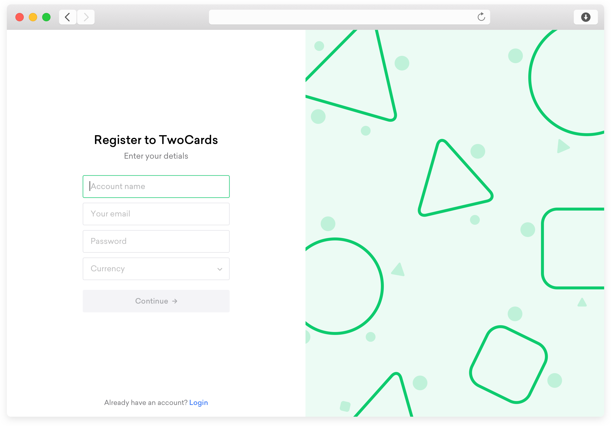

Client
Personal Project
Period
2016
Visit
twocards.co
TwoCards is a venture I started in 2016. As an ex freelancer, I always felt frustrated sending invoices - it took time, it looked shit, I never got paid on time. After speaking to other freelancers and small business it was clearly something everyone felt frustrated by. The goal of TwoCards was to build something lightweight that simply does a good job.
What clients would see when sent an invoice
The idea with TwoCards was that you should be able to get back to your real work, right away. Throughout the design process I continually pushed to strip time out of the workflow. I also pushed to make invoices feel at home on the web, rather than something from a word document. Sign up and give it a go.
